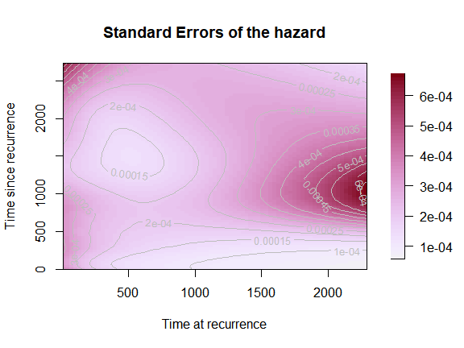
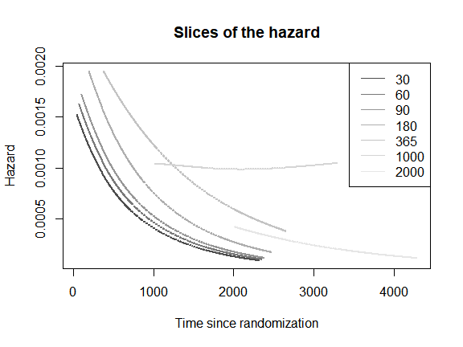

Disclaimer: the current version of the package and of this vignette is a work-in-progress! Details might change with future updates and this vignette will be updated consequently.
Introduction
The topic of this vignette is visualization of the hazard of one
event over two time scales. We show the complete set of options for the
function plot_haz2ts(). We assume that the reader already
knows how to estimate the smooth hazard model with two time scales.
Therefore, here we will only discuss the plotting function. For
illustration, we will use the PH model from the vignette Smooth
hazards with two time scales.
The function plot()
The method plot(), for the class "haz2ts"
offers different possibilities to plot the results of the model with two
time scales. The user can choose between plotting the hazard surface
which_plot == "hazard", plotting the standard error surface
which_plot == "SE", plotting cross-sections (also called
“slices”) of the surface at specific values of one of the two time
dimensions which_plot == "slices", and finally, for a model
with covariates’ effects, it is possible to plot only the estimated
\(\beta\) coefficients with their
confidence intervals (or on the hazard ratios scale) with
which_plot == "covariates".
We will now examine each of these options and their use.
Baseline hazard and log-hazard
The default plot is the hazard surface over the \((u,s)\)-plane, with contour lines in white
to mark levels of the hazard. It is obtained by passing the fitted
object, obtained from fit2ts() (hence of class
"haz2ts") to the function plot().
plot(mod_cov)Plot on the \((t,s)\)-plane
The same plot can be obtained over the \((t,s)\)-plan using a rectangular grid or a
grid of parallelograms (in which case it is not possible to plot contour
lines). This is done by modifying the arguments original
and rectangular_grid in the list of options for the
plotting parameters in plot_options. Additionally, we will
here customize the title of the plots and the label of the axes.
par(mfrow = c(2,1),
font.main = 1)
plot(mod_cov,
plot_options = list(
rectangular_grid = T, # for grid of rectangles
original = T, # for plot in (t,s)-plane
main = "Original plane - rectangular grid",
xlab = "Time since randomization",
ylab = "Time since recurrence"
))
plot(mod_cov,
plot_options = list(
rectangular_grid = F, # for grid of parallelograms
original = T, # for plot in (t,s)-plane
main = "Original plane - grid of parallelograms",
xlab = "Time since randomization",
ylab = "Time since recurrence"
))Evaluate the \(B\)-splines on a finer grid
With the default options, the \(B\)-splines bases used for estimation will
be also used to compute the values of the hazard. If the grid of bins
used for binning the data, and to evaluate the estimating \(B\)-splines bases, is already dense (many
small bins), the plot of the estimated hazard will appear nicely smooth.
However, in some cases, larger bins are used for the original binning of
the data and for the estimation of the model. In such cases it may be
worthwhile to evaluate the \(B\)-splines bases on a finer grid of
points. The hazard surface will appear much smoother because it will be
interpolated over more points. It is possible to change the grid for
plotting by passing the specification for a new grid to the argument
plot_grid. We show how to do so by passing the
specification for a grid where the bins are 5 days apart from each other
(as opposed to 30). In this case it is a good idea to increase the
number of shades in the color legend too.
Plot the log-hazard
We can plot the hazard on the log-scale by changing the argument
loghazard = T in plot_options:
par(mfrow = c(2,1),
font.main = 1)
plot(mod_cov,
plot_options = list(
loghazard = T,
main = "Log-hazard (u,s)",
xlab = "Time at recurrence",
ylab = "Time since recurrence"
))
plot(mod_cov,
plot_options = list(
original = T,
loghazard = T,
main = "Log-hazard (t,s)",
xlab = "Time since randomization",
ylab = "Time since recurrence"
))Plot the log10-hazard
Similarly, we can plot the hazard on the log10-scale by changing the
argument log10hazard = T in plot_options:
par(mfrow = c(2,1),
font.main = 1)
plot(mod_cov,
plot_options = list(
log10hazard = T,
main = "Log10-hazard (u,s)",
xlab = "Time at recurrence",
ylab = "Time since recurrence"
))
plot(mod_cov,
plot_options = list(
original = T,
log10hazard = T,
main = "Log10-hazard (t,s)",
xlab = "Time since randomization",
ylab = "Time since recurrence"
))Cut extrapolated hazard
Carollo et al. (2023) discusses the
issue of extrapolated hazard beyond the maximum value observed for the
time scale \(t\). We can limit the plot
of the hazard to those areas where it is not extrapolated. We do so by
changing the values of cut_extrapolated = T and
tmax in plot_options.
par(mfrow = c(2,1),
font.main = 1)
plot(mod_cov,
plot_options = list(cut_extrapolated = T,
tmax = 3214,
main = "Cut extrapolated hazard",
xlab = "Time at recurrence",
ylab = "Time since recurrence"))
plot(mod_cov,
plot_options = list(cut_extrapolated = T,
tmax = 3214,
original = T,
main = "Cut extrapolated hazard",
xlab = "Time since randomization",
ylab = "Time since recurrence"))Change color palette and color of the contour lines
Let us try a new color palette and modify the options concerning the contour lines. The palette should be a function of the number of shades, so we need to code one extra line…
mycol <- function(nshades){
colorspace::sequential_hcl(n=nshades, "Blues 3")
}
plot(mod_cov,
plot_options = list(col_palette = mycol,
main = "New colors",
xlab = "Time at recurrence",
ylab = "Time since recurrence",
contour_col = "pink",
contour_nlev = 20))Standard Errors surface
The same options apply for the SE surface, so we will just show how to produce the simplest version of the SE surface plot.
plot(mod_cov,
which_plot = "SE",
plot_options = list(main = "Standard Errors of the hazard",
xlab = "Time at recurrence",
ylab = "Time since recurrence"))
Cross-sections of the hazard
Another very informative representation for the 2d hazard consists of plotting ‘slices’ of the two-dimensional hazard as curves over one of the time scales. For example, the 2d hazard surface is plotted as a series of one-dimensional hazard curves over time since recurrence \(s\) for selected values of time at recurrence \(u\). Note: Adding an automated legend to this kind of plot is still not implemented in the package (to come), but we can add one manually.
plot(mod_cov,
which_plot = "slices",
where_slices = c(30, 60, 90, 180, 365, 1000, 2000),
direction = "u",
plot_options = list(main = "Slices of the hazard",
xlab = "Time since recurrence",
ylab = "Hazard"))
legend("topright",
legend = c(30, 60, 90, 180, 365, 1000, 2000),
lty = 1,
col = grDevices::gray.colors(7))
It is also possible to plot one-dimensional hazards over time since
randomization (\(t\)) for selected
values of time since recurrence (\(s\)). The interpretation of these
one-dimensional hazards is less clear at the individual level, but is
meaningful at the population level. To obtain such plot, we specify
direction = "s".
plot(mod_cov,
which_plot = "slices",
where_slices = c(30, 60, 90, 180, 365, 1000, 2000),
direction = "s",
plot_options = list(main = "Slices of the hazard",
xlab = "Time since randomization",
ylab = "Hazard"))
legend("topright",
legend = c(30, 60, 90, 180, 365, 1000, 2000),
lty=1,
col= grDevices::gray.colors(7))
Covariates plot
Finally, we show how to plot the covariates’ effects. We have discussed this kind of plot in more details in the vignette Smooth hazard with one time scale, so here will only show the default plot.